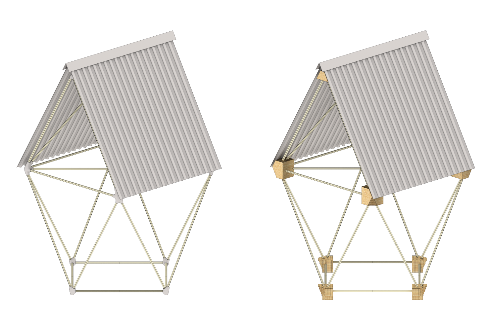
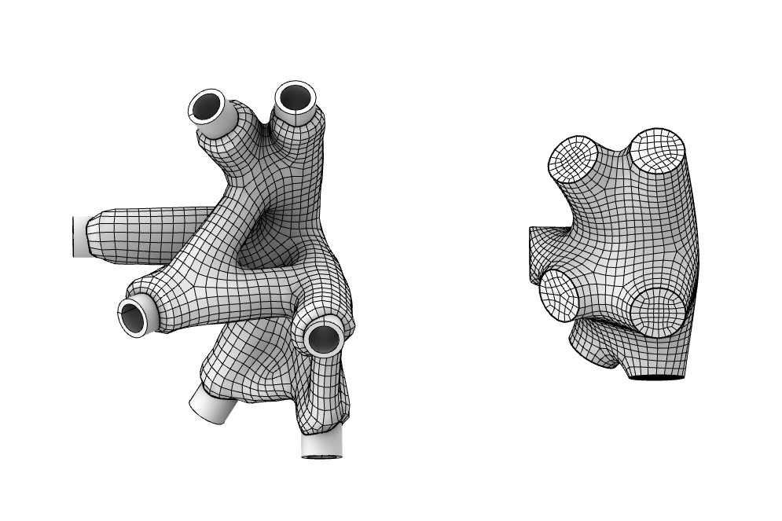
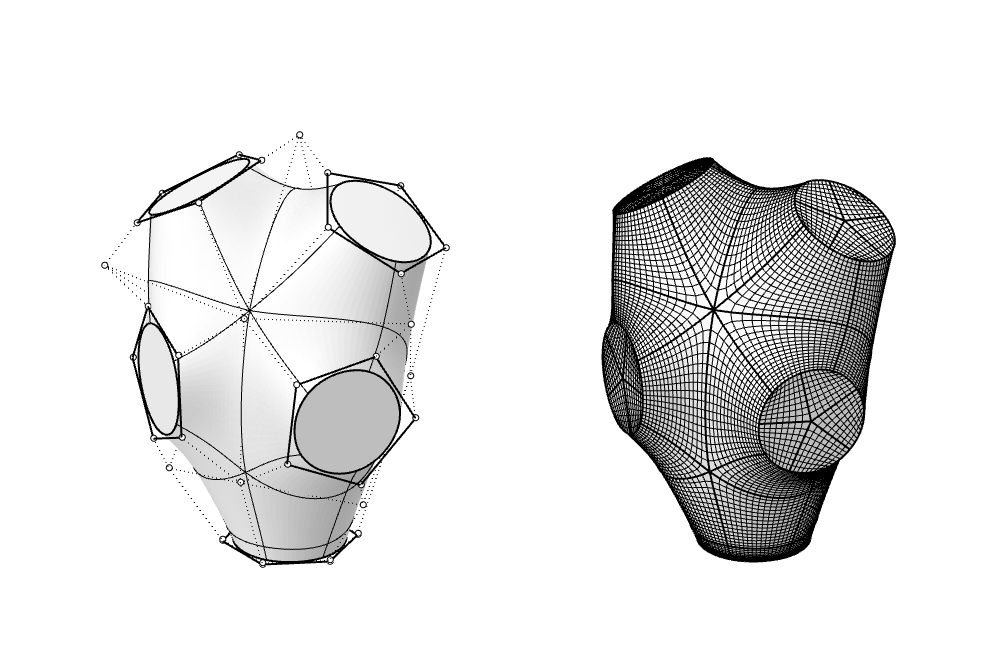
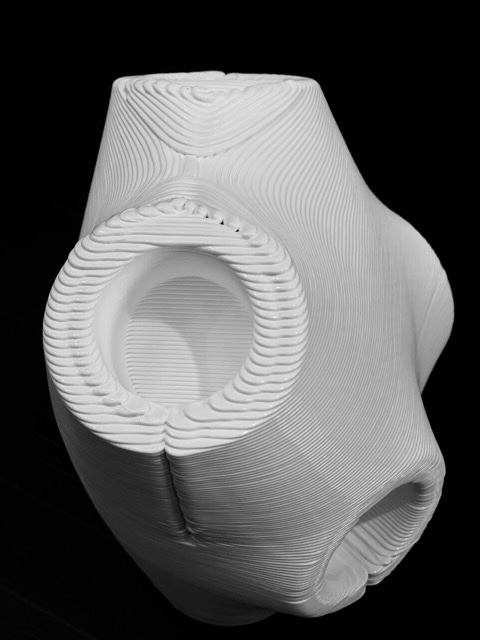
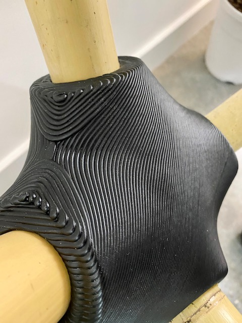
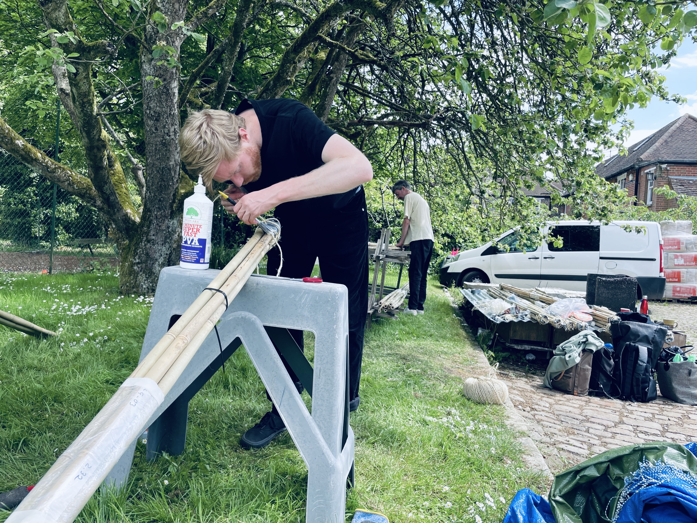
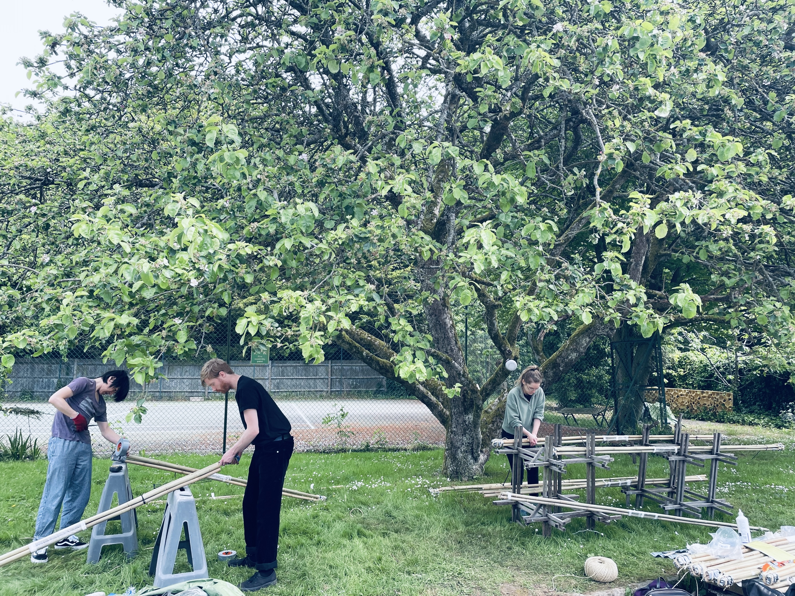
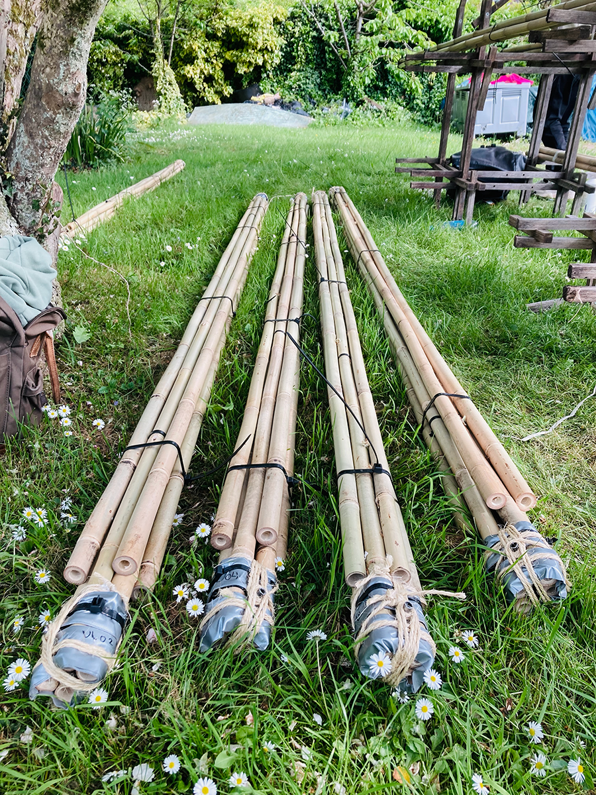

Khudi Bari
image © Martin Ocampo
Exhibited at the Royal Academy Summer Show 2022
Design
Architect
Marina Tabassum
My Role
Computational Designer @ AKT II
For this project I did inital concept studies on geometry / fabrication possibilities for the nodes, and assisted in the final construction by making the bamboo bundles.
AKT II Team
Martin Ocampo, Ed Tibuzzi, Alexandra Toivonen, Kohsaku Mitsuhashi
Year
2022
Status
Built 2022
External Links
For the Royal Academy summer show 2022 architect Marina Tabassum was invited to build a full scale iteration
of her modular homes called
Khudi Bari
(meaning Tiny house). Our team at AKT II helped her with the realisation
of this by, in a very short time, making this design happen. My role focussed on a key issue, with both the exihibition piecce
and the original designs, which was the nodes. For her structures built in bangladesh a bespoke welded steel node was used.
This design had some issues however, and was in need of some improvement.
As a team we took this as an opportunity to do some experimentation on potential node geometries and materialty which we could use.
Versions in both layered sheet materials and 3d printed monolithic was considered. The final design, due to time constraints, was again
made from welded aluminium, but the geometric explorations still served as a foundation for ideas about how the making of the Khudi Bari
could be further improved.

image © Martin Ocampo

The image above shows two out of many options, with the left showing a smooth version in 3d printed metal and the right a prismatic
geometry made from layered, recycled, OSB sheets. Vaqrious shapes of the 3d printed version was considered, both as topology optimised geometries
and more geometrically smooth versions, which in the end were favoured by the architect.
A prototype was printed by AI Build using their large scale 3d printers and support less technology which they have been working on.
In the end, there wasn't enough time to make this work, but this still serve as a foundation for the potential industrialisation of the process of making these homes.


 
Image © AI Build
As a team we were also responsible for assembling the bamboo members which was done during a set of days spent at Grymsdyke farm.


